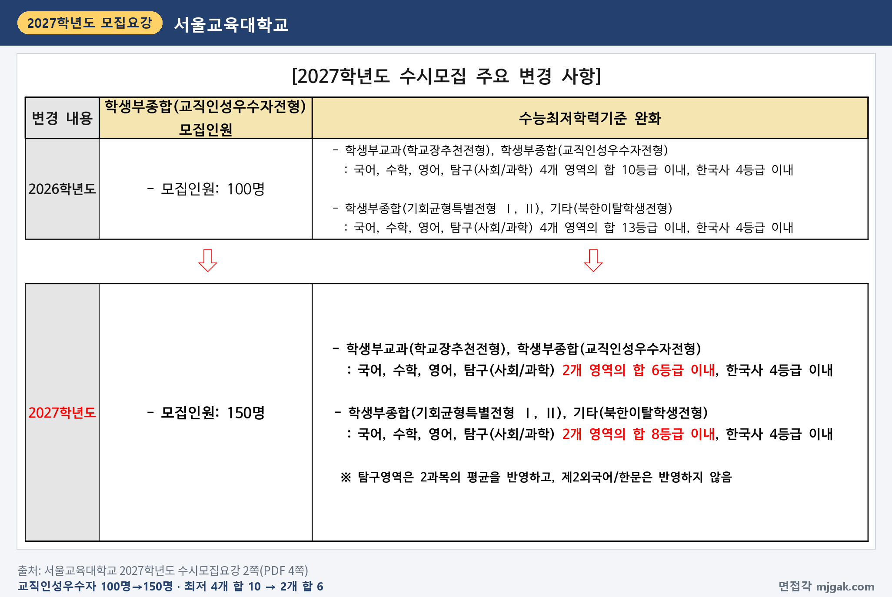
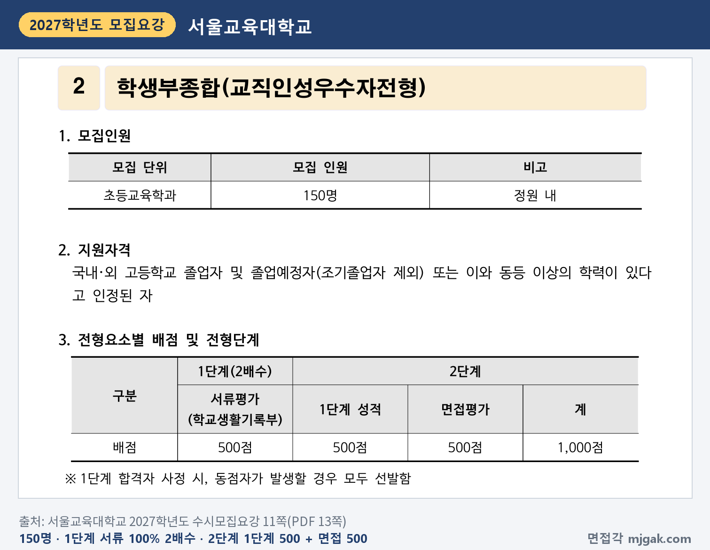
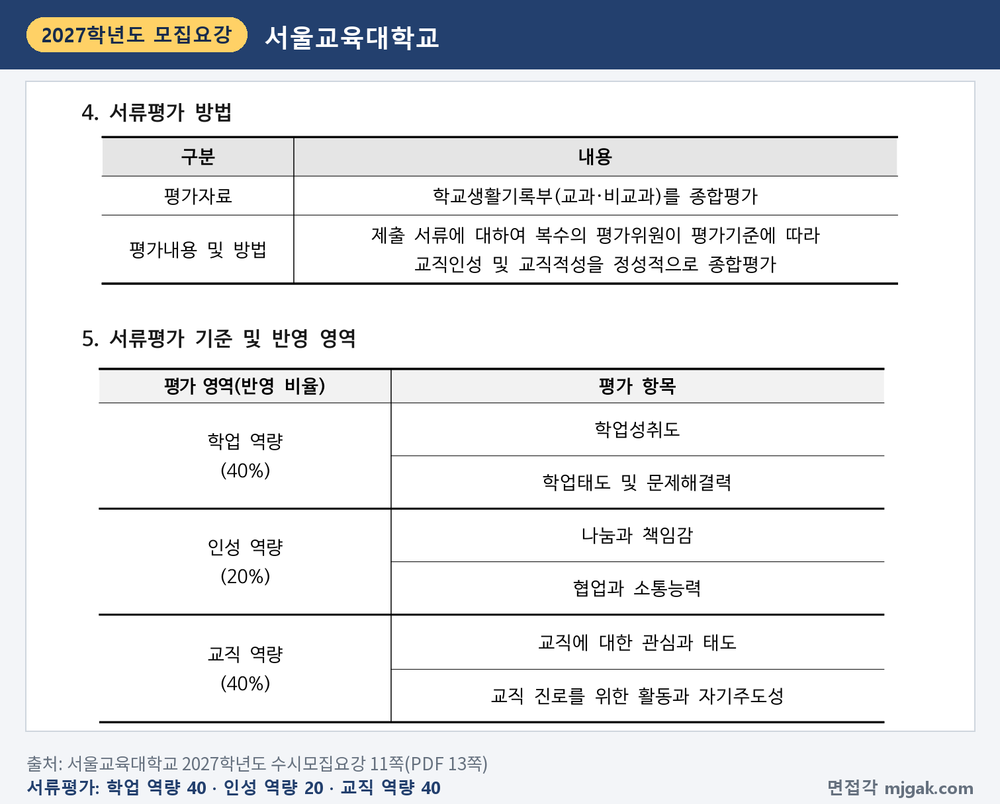
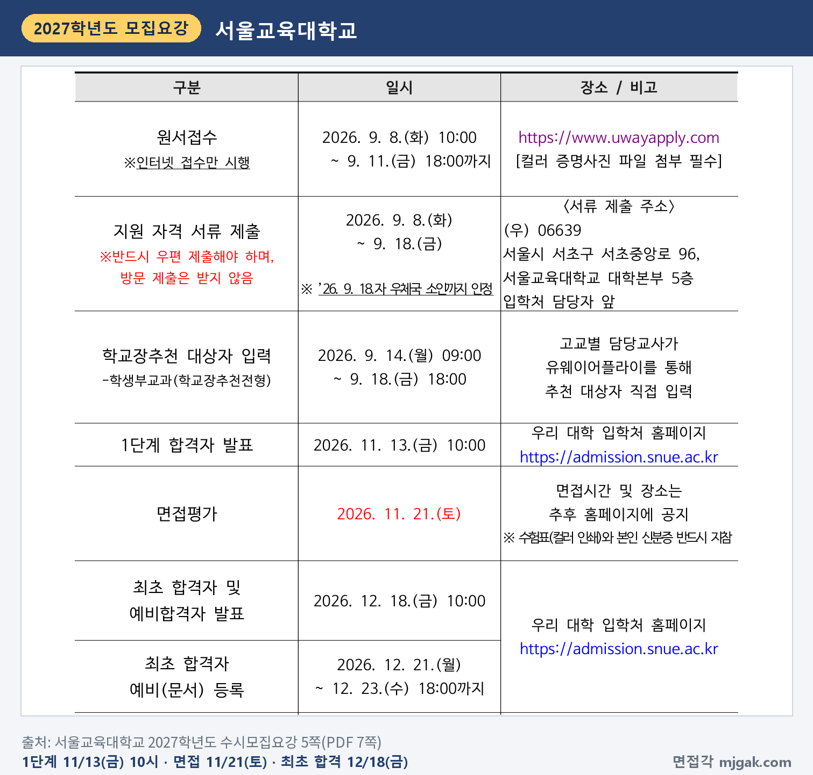
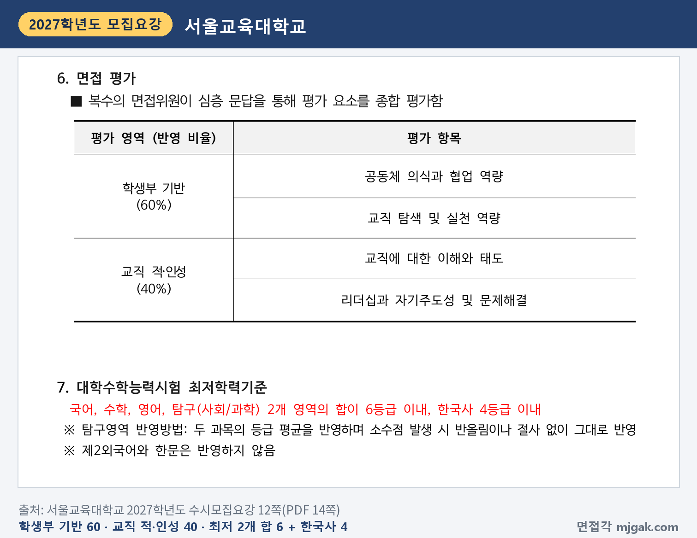
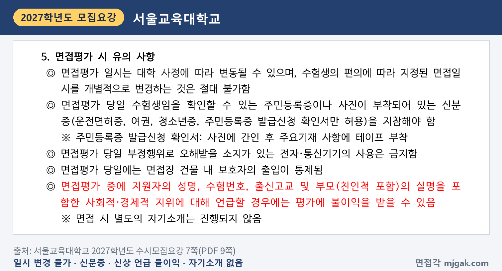
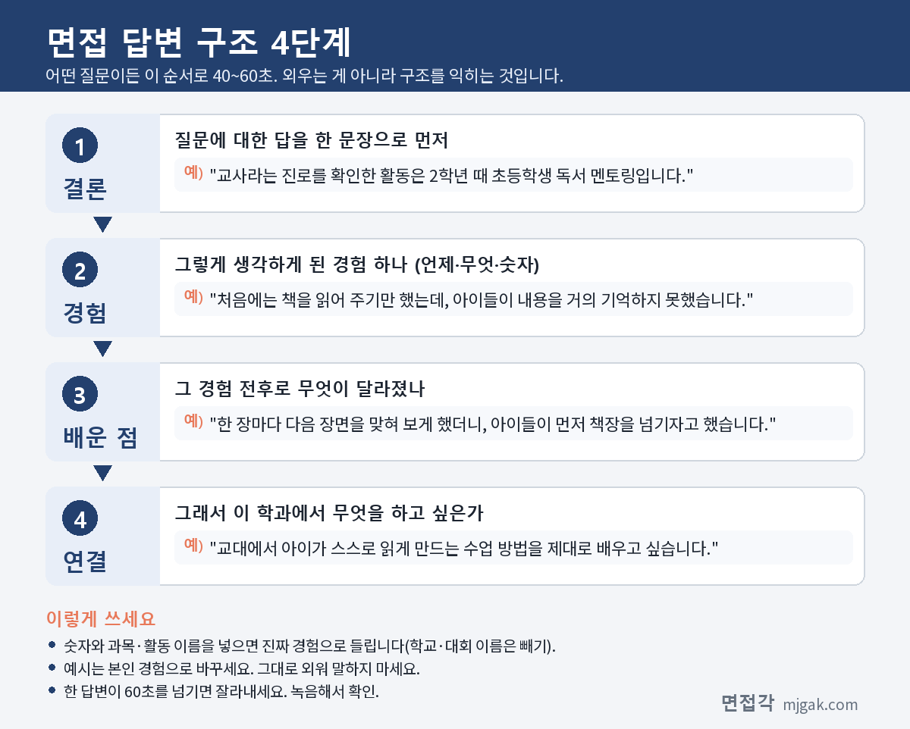
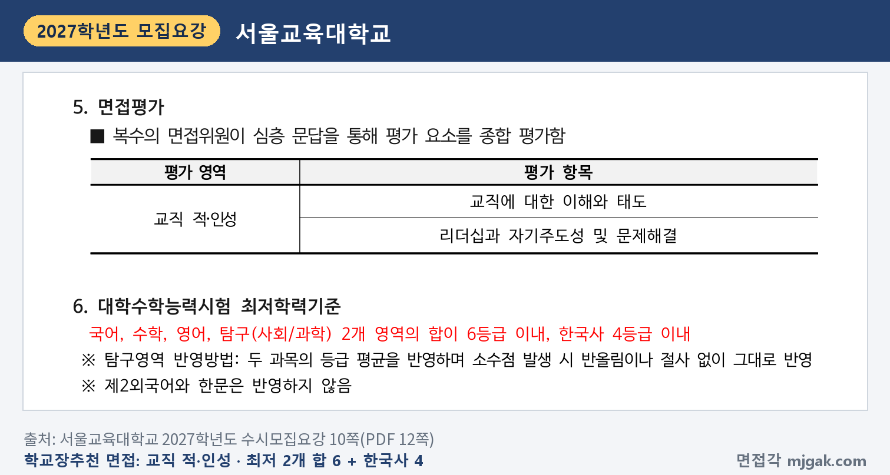

Ctrl+V (서식 유지됨)제목
본문 (이 영역 전체가 복사됩니다)
📷 여기에 이미지 넣기 — 썸네일 — thumb-snue.png (대표 이미지로 지정)
서울교대 교직인성우수자전형에서 먼저 챙길 것은 순서입니다. 1단계 합격자 발표가 수능보다 먼저인 11월 13일(금) 10시이고, 수능은 11월 19일(목), 면접은 수능 이틀 뒤인 11월 21일(토)입니다. 2단계는 1단계 성적 500점과 면접평가 500점을 합산하니 면접 비중이 절반이고, 면접 평가의 60%가 학생부 기반입니다. 수능최저학력기준도 있습니다. 이 글은 서울교육대학교 2027학년도 수시모집요강을 바탕으로 교직인성우수자전형의 전형 방법과 일정, 면접 방식, 예상 질문 7개, 준비 순서를 정리하고, 같은 날 면접을 보는 학교장추천전형 등은 따로 묶었습니다. 교직인성우수자전형에 지원한 고3과 재수생이 읽으시면 됩니다.
1. 교직인성우수자전형, 2027학년도에는 어떻게 보나
교직인성우수자전형은 학생부종합전형으로 초등교육학과 150명을 뽑습니다(11쪽). 모집요강의 주요 변경사항을 보면 모집인원이 2026학년도 100명에서 150명으로 늘었습니다. 수능최저학력기준은 국어·수학·영어·탐구 4개 영역 합 10등급 이내에서 2개 영역 합 6등급 이내로 완화됐고, 한국사 4등급 이내는 같습니다(2쪽).
📷 여기에 이미지 넣기 — 캡처 1 — 서울교육대학교 2027학년도 수시모집요강 2쪽(PDF 4쪽): snue-2027-tc-change.png
지원자격은 국내·외 고등학교 졸업자 및 졸업예정자(조기졸업자 제외) 또는 이와 동등 이상의 학력이 있다고 인정된 자입니다(11쪽). 서울교대 수시모집은 모든 전형 중 1개 전형에만 지원할 수 있습니다(4쪽).
전형 방법은 1단계에서 서류평가(학교생활기록부) 500점으로 2배수를 뽑고, 2단계에서 1단계 성적 500점과 면접평가 500점을 합산해 1,000점 만점으로 선발합니다. 1단계에서 동점자가 나오면 모두 선발합니다(11쪽). 모집인원에 2를 곱해 이 글에서 계산하면 1단계 합격 규모는 300명이고, 동점자 전원 선발이라 실제 인원은 이보다 많을 수 있습니다.
📷 여기에 이미지 넣기 — 캡처 2 — 서울교육대학교 2027학년도 수시모집요강 11쪽(PDF 13쪽): snue-2027-tc-method.png
서류평가는 학교생활기록부(교과·비교과)를 복수의 평가위원이 평가기준에 따라 교직인성 및 교직적성을 정성적으로 종합평가합니다. 반영 영역은 학업 역량 40%(학업성취도, 학업태도 및 문제해결력), 인성 역량 20%(나눔과 책임감, 협업과 소통능력), 교직 역량 40%(교직에 대한 관심과 태도, 교직 진로를 위한 활동과 자기주도성)입니다(11쪽).
📷 여기에 이미지 넣기 — 캡처 3 — 서울교육대학교 2027학년도 수시모집요강 11쪽(PDF 13쪽): snue-2027-tc-document.png
최종 동점자는 면접평가 성적, 서류평가 성적 순으로 가리고, 그다음은 입학전형관리위원회가 정합니다. 전형서류를 내지 않거나 면접평가에 결시하면 불합격입니다(12쪽). 학교폭력 조치사항 제1호~제9호는 1단계 평가 때 '부적격' 처리합니다(31쪽). 전형료는 80,000원이고, 1단계 불합격자에게 20,000원을 돌려줍니다(33쪽).
2. 언제 보나: 수능 전 1단계 발표, 수능 이틀 뒤 면접
일정은 날짜순으로 이렇습니다(5쪽).
- 11월 13일(금) 10:00: 1단계 합격자 발표, 입학처 홈페이지(admission.snue.ac.kr)
- 11월 19일(목): 수능
- 11월 21일(토): 면접평가. 면접시간과 장소는 추후 홈페이지에 공지
- 12월 18일(금) 10:00: 최초 합격자 및 예비합격자 발표
- 12월 21일(월) ~ 23일(수) 18:00: 최초 합격자 예비(문서) 등록
1단계 발표에서 면접까지는 8일, 수능에서 면접까지는 2일입니다(이 글에서 계산한 값). 1단계와 최초 합격 여부는 입학처 홈페이지에서 직접 조회합니다(5·34쪽). 예비(문서) 등록 기간은 5쪽 전형일정 표의 최초 합격자 기간을 적었습니다. 34쪽 합격자 등록 안내에는 입학 예비 등록 기간이 12월 21일(월) ~ 30일(수) 18:00으로 적혀 있어 두 쪽이 다르니, 합격 발표 때 입학처 공지로 마감을 다시 확인하세요.
📷 여기에 이미지 넣기 — 캡처 4 — 서울교육대학교 2027학년도 수시모집요강 5쪽(PDF 7쪽): snue-2027-tc-schedule.png
3. 면접은 어떻게 보나
모집요강의 면접 방식은 "복수의 면접위원이 심층 문답을 통해 평가 요소를 종합 평가함"입니다. 평가 영역과 반영 비율은 다음과 같습니다(12쪽).
- 학생부 기반 60%: 공동체 의식과 협업 역량, 교직 탐색 및 실천 역량
- 교직 적·인성 40%: 교직에 대한 이해와 태도, 리더십과 자기주도성 및 문제해결
면접 500점에 60%를 곱하면 학생부 기반이 300점에 해당합니다(이 글에서 계산한 값). 면접 시 별도의 자기소개는 진행하지 않습니다(7쪽). 면접 시간, 면접위원 수, 개별·집단 여부, 제시문 여부는 모집요강에 적혀 있지 않습니다.
📷 여기에 이미지 넣기 — 캡처 5 — 서울교육대학교 2027학년도 수시모집요강 12쪽(PDF 14쪽): snue-2027-tc-interview.png
면접평가 유의 사항도 같이 보세요(7쪽). 지정된 면접 일시는 개별적으로 바꿀 수 없습니다. 당일에는 주민등록증이나 사진이 붙은 신분증(운전면허증, 여권, 청소년증, 주민등록증 발급신청 확인서만 허용)을 지참하고, 전자·통신기기는 쓸 수 없으며, 보호자는 면접장 건물에 들어갈 수 없습니다. 면접 중에 성명, 수험번호, 출신고교, 부모(친인척 포함)의 실명을 포함한 사회적·경제적 지위를 말하면 불이익을 받을 수 있습니다. 수험표는 컬러로 인쇄해 신분증과 함께 가져갑니다(5·32쪽).
📷 여기에 이미지 넣기 — 캡처 6 — 서울교육대학교 2027학년도 수시모집요강 7쪽(PDF 9쪽): snue-2027-tc-rules.png
4. 평가 항목에서 나올 예상 질문 7개와 답변법
서울교대는 모집요강에 면접 질문 예시를 공개하지 않았습니다. 아래 7개는 12쪽 평가 항목으로 정리한 예상 질문입니다. 모집단위가 초등교육학과 하나라, 예시 답변은 활동 종류를 바꿔 가며 쓴 가상의 예시입니다. 반드시 본인 학생부의 활동으로 바꾸세요.
▶ 질문 1. 학생부 활동 가운데 교사라는 진로를 직접 확인한 활동은 무엇인가요? (학생부 기반: 교직 탐색 및 실천 역량)
왜 묻나: 학생부 기반(60%)의 평가 항목에 "교직 탐색 및 실천 역량"이 있습니다. 교직을 어떻게 알아보고 실제로 해 봤는지를 묻는 질문입니다.
답변 구조: 활동 한 문장 → 그 활동에서 막힌 점 → 내가 바꾼 방법과 결과 → 교대에서 배울 것.
답변 예시 (독서 멘토링):
"교사라는 진로를 확인한 활동은 2학년 때 초등학생 독서 멘토링입니다. 처음에는 책을 읽어 주기만 했는데, 아이들이 내용을 거의 기억하지 못했습니다. 그래서 한 장을 읽을 때마다 다음 장면을 맞혀 보게 했더니, 아이들이 먼저 책장을 넘기자고 했습니다. 교대에서 아이가 스스로 읽게 만드는 수업 방법을 제대로 배우고 싶습니다."
주의: "아이들이 좋아서"로 끝내지 마세요. 내가 바꾼 것 하나가 들어가야 합니다.
▶ 질문 2. 모둠 과제에서 의견이 갈렸을 때 본인은 어떤 역할을 했나요? (학생부 기반: 공동체 의식과 협업 역량)
왜 묻나: 학생부 기반의 "공동체 의식과 협업 역량"을 모둠 활동 경험으로 묻는 질문입니다. 의견을 어떻게 모았는지가 드러나야 합니다.
답변 구조: 과제와 갈린 의견 → 내가 한 일 → 정한 방법과 결과 → 그 뒤 달라진 점.
답변 예시 (모둠 탐구):
"통합사회 모둠 탐구에서 주제를 두고 '학교 급식 잔반'과 '등굣길 안전'으로 의견이 갈렸습니다. 저는 두 주제를 각각 조사할 때 필요한 시간과 자료를 표로 정리해 보여 주자고 제안했습니다. 표를 보고 모두가 설문을 바로 할 수 있는 잔반 주제를 골랐고, 반대했던 친구에게 설문 분석을 맡겼습니다. 결정 과정을 보여 주면 반대한 사람도 함께 움직인다는 것을 배웠습니다."
주의: "제가 이끌었습니다"만 말하지 말고, 다른 의견을 어떻게 받아들였는지 넣으세요.
▶ 질문 3. 학급이나 학교에서 다른 사람을 위해 스스로 맡은 일이 있나요? (학생부 기반: 공동체 의식과 협업 역량)
왜 묻나: 학생부 기반의 "공동체 의식과 협업 역량"을 스스로 맡은 일로 묻는 질문입니다. 서류평가 인성 역량의 "나눔과 책임감"과도 이어집니다(11쪽).
답변 구조: 맡은 일 한 문장 → 시작한 이유 → 꾸준히 한 방법 → 결과와 배운 점.
답변 예시 (학급 도우미):
"1학년 때 전학 온 친구가 수행평가 일정을 자주 놓치는 것을 보고, 학급 일정표를 만들어 교실 뒤에 붙이는 일을 스스로 맡았습니다. 매주 월요일 아침에 과목별 마감일을 고쳐 적었고, 1년 동안 한 주도 빠뜨리지 않았습니다. 2학기에는 그 친구가 일정표에 빠진 과제를 먼저 알려 주었습니다. 작은 일이라도 꾸준히 하면 다른 사람이 함께하게 된다는 것을 배웠습니다."
주의: 한 번 한 일보다 꾸준히 한 일이 좋습니다. 기간과 횟수를 말하세요.
📷 여기에 이미지 넣기 — 이미지 1 — 제미나이 생성: 느티나무 단풍이 보이는 늦가을 캠퍼스 라운지에서 그림책·색 블록·리코더·수채 물감·작은 공·지구본 옆에서 답하는 여학생(실사), 서울교대 상징 느티나무·사슴 조형물 / "제미나이 프롬프트 1"
(AI로 만든 이미지로, 실제 캠퍼스와 다를 수 있습니다)
▶ 질문 4. 초등교사에게 가장 필요한 자질 하나를 고르고, 그렇게 생각한 경험을 말해 보세요. (교직 적·인성: 교직에 대한 이해와 태도)
왜 묻나: 교직 적·인성(40%)의 첫 항목이 "교직에 대한 이해와 태도"입니다. 자질을 말로만 꼽는지, 내 경험으로 설명하는지를 묻는 질문입니다.
답변 구조: 자질 한 문장 → 그렇게 생각한 장면 → 그 뒤 내가 바꾼 행동 → 교사가 되면 할 일.
답변 예시 (교육봉사):
"초등교사에게 가장 필요한 자질은 아이가 왜 못하는지를 먼저 묻는 태도라고 생각합니다. 교육봉사에서 덧셈을 자꾸 틀리는 아이가 있었는데, 물어보니 받아올림 표시를 어디에 써야 할지 몰라서였습니다. 그 뒤로는 틀린 문제를 고쳐 주기 전에 어떻게 풀었는지 먼저 말하게 했습니다. 교사가 되면 아이의 풀이 과정을 먼저 듣는 수업을 하고 싶습니다."
주의: "사랑", "열정"처럼 넓은 말만 쓰지 말고 장면 하나를 붙이세요.
▶ 질문 5. 스스로 계획을 세워 끝까지 해낸 일은 무엇인가요? (교직 적·인성: 리더십과 자기주도성)
왜 묻나: "리더십과 자기주도성"을 묻습니다. 누가 시키지 않은 목표를 세우고 끝까지 간 과정을 봅니다.
답변 구조: 목표 한 문장 → 세운 계획 → 중간에 막힌 점과 바꾼 계획 → 결과.
답변 예시 (자율 동아리):
"2학년 때 친구 세 명과 수학 개념을 그림으로 설명하는 자율 동아리를 만들었습니다. 한 달에 개념 네 개씩 그림 자료를 만들기로 했는데, 시험 기간에 계획이 계속 밀렸습니다. 그래서 시험이 있는 달은 두 개로 줄이는 대신 다른 달에 하나씩 더 만들기로 바꿨고, 1년 동안 자료 마흔 개를 모두 완성했습니다. 계획은 지키는 것만큼 고치는 것도 중요하다는 것을 배웠습니다."
주의: 결과만 말하지 말고, 계획을 고친 순간을 넣으세요.
▶ 질문 6. 활동하다 예상하지 못한 문제가 생겼을 때 어떻게 해결했나요? (교직 적·인성: 문제해결)
왜 묻나: 같은 평가 항목의 "문제해결"입니다. 원인을 어떻게 찾았고 무엇을 바꿨는지를 봅니다.
답변 구조: 상황과 문제 → 원인을 찾은 방법 → 바꾼 것 → 결과와 배운 점.
답변 예시 (학교 행사):
"과학의 날 행사에서 초등학생 대상 실험 부스를 맡았는데, 첫 시간에 아이들이 설명을 듣다가 자리를 떠났습니다. 남은 아이들에게 물어보니 설명이 길어서 실험을 언제 하는지 몰랐다고 했습니다. 그래서 설명을 1분으로 줄이고 아이가 먼저 손으로 만져 보게 순서를 바꿨더니, 오후에는 줄이 생겼습니다. 문제의 원인은 상대에게 물어야 보인다는 것을 배웠습니다."
주의: "열심히 해서 해결했습니다"로 끝내지 말고 원인을 찾은 방법을 말하세요.
▶ 질문 7. 입학하면 무엇을 공부하고 싶나요? (교직 적·인성: 교직에 대한 이해와 태도)
왜 묻나: 서울교대는 입학 후 필수 교과목에 체육·음악·미술 실기 과목이 들어 있다고 밝혔고(7쪽), 심화과정 13개를 두며 배정은 희망대로 되지 않을 수 있다고 적었습니다(35쪽). 이런 교육과정을 알고 지원했는지가 드러나는 질문입니다.
답변 구조: 공부하고 싶은 것 한 문장 → 그 이유가 된 경험 → 약한 부분과 준비 계획.
답변 예시 (실기 준비):
"초등학생이 수학을 싫어하게 되는 순간을 줄이는 방법을 공부하고 싶습니다. 멘토링에서 분수를 그림으로 바꿔 설명했을 때 아이들이 이해하는 것을 보고 생긴 관심입니다. 다만 저는 피아노를 쳐 본 적이 없어서, 입학 후 음악 실기 과목에 대비해 기본 반주부터 연습하고 있습니다."
주의: 심화과정 이름을 정답처럼 외우기보다, 왜 그 공부를 하고 싶은지 경험으로 말하세요.
5. 답변은 이 4단계로 만드세요
어떤 질문이든 결론 → 경험 → 배운 점 → 연결 순서로 40~60초 안에 말하세요. 아래 도식은 질문 1을 4단계로 쪼갠 것입니다.
📷 여기에 이미지 넣기 — 도식 — structure-snue.png
6. 학교장추천전형 등도 11월 21일(토) 면접
학교장추천전형(학생부교과)은 초등교육학과 40명을 뽑습니다. 국내 고등학교 졸업예정자(조기졸업자 제외)로 학교장 추천을 받아야 하고, 고교별 추천 인원은 3학년 재적인원의 3% 이내입니다(9쪽). 1단계 교과 100%(800점)로 2배수, 2단계는 1단계 성적 800점 + 면접 200점입니다(9쪽). 면접은 같은 방식이지만 평가 영역이 교직 적·인성(교직에 대한 이해와 태도, 리더십과 자기주도성 및 문제해결) 하나이고, 수능 최저는 교직인성우수자와 같으며, 동점자는 교과 성적부터 봅니다(10쪽). 기회균형특별전형Ⅰ(국가보훈대상자 5명·농어촌학생 10명)·Ⅱ(기초생활수급자등 19명·장애인등대상자 11명)는 교직인성우수자와 같은 1단계 2배수, 1단계 50% + 면접 50%이고 최저는 2개 영역 합 8등급 이내(한국사 4등급 이내)입니다. 재외국민특별전형(7명)과 북한이탈학생전형(3명)은 면접 100%이고, 북한이탈학생전형에도 기회균형과 같은 최저가 있습니다(2·3쪽). 1단계 발표와 면접 날짜는 모든 전형이 같은 표에 있습니다(5쪽).
📷 여기에 이미지 넣기 — 캡처 7 — 서울교육대학교 2027학년도 수시모집요강 10쪽(PDF 12쪽): snue-2027-tc-principal.png
7. 10월 25일(일)부터 면접 당일까지 준비 순서
10월 25일(일) ~ 11월 12일(목): 수능 공부가 먼저이니 주말에 조금씩 합니다. 1단계 발표 뒤에는 수능까지 6일뿐이라, 질문 7개의 답변 초안을 이 기간에 만듭니다. 학생부에서 교육 관련 활동, 모둠 활동, 스스로 맡은 일에 표시하고, 메모에서 이름·학교 이름·부모 직업이 드러나는 표현을 지웁니다.
11월 13일(금) 10시, 1단계 발표: 입학처 홈페이지에서 합격 여부를 직접 확인합니다(34쪽).
11월 14일(토) ~ 18일(수): 수능 직전입니다. 초안을 소리 내어 한 번씩 읽는 정도로만 합니다.
11월 19일(목): 수능.
11월 20일(금): 홈페이지에서 면접시간과 장소를 확인하고(5쪽), 수험표를 컬러로 인쇄합니다. 질문 1·4를 60초 안에 말하는지 한 번 녹음합니다. 새 답변은 만들지 않습니다.
11월 21일(토), 면접: 신분증과 수험표를 챙깁니다. 결시하면 불합격입니다(12쪽).
12월 18일(금) 10시: 최초 합격자 및 예비합격자 발표. 합격했다면 예비(문서) 등록을 놓치지 마세요. 5쪽 표는 12월 23일(수) 18시까지, 34쪽 안내는 12월 30일(수) 18시까지로 다르니, 입학처 공지를 확인하고 이른 날짜인 12월 23일(수) 18시 전에 마치는 것이 안전합니다.
8. 서울교대 교직인성우수자전형 자주 묻는 것들
Q. 학교장추천전형과 교직인성우수자전형에 같이 지원할 수 있나요?
A. 안 됩니다. 서울교대 수시모집 모든 전형 중 1개 전형에만 지원할 수 있고(4쪽), 복수 지원하면 불합격 처리하거나 합격·입학을 취소합니다(6쪽).
Q. 자기소개를 준비해야 하나요?
A. 면접 시 별도의 자기소개는 진행하지 않습니다(7쪽).
Q. 면접 날짜나 시간을 바꿀 수 있나요?
A. 안 됩니다. 수험생 편의에 따라 지정된 면접 일시를 개별적으로 바꾸는 것은 절대 불가합니다(7쪽).
Q. 면접 복장 규정이 있나요?
A. 모집요강에 면접 복장 규정은 없습니다. 면접 중 출신고교 등을 말하면 불이익을 받을 수 있다는 규정은 있습니다(7쪽).
Q. 수능 최저는 어떻게 되나요?
A. 국어, 수학, 영어, 탐구(사회/과학) 중 2개 영역의 합이 6등급 이내이고 한국사 4등급 이내입니다. 탐구는 두 과목의 등급 평균을 반올림이나 절사 없이 반영하고, 제2외국어와 한문은 반영하지 않습니다(12쪽).
9. 면접 전날 체크리스트
□ 질문 1~7을 각각 60초 안에 말할 수 있다
□ 학생부에서 교직 탐색 활동과 모둠 활동을 두 개씩 골라 두었다
□ 자기소개 없이 첫 질문에 바로 답하는 연습을 했다
□ 답변에 이름·학교 이름·부모 직업이 나오지 않는지 녹음으로 확인했다
□ 입학처 홈페이지에서 면접시간과 장소를 확인했다
□ 수험표를 컬러로 인쇄했고 신분증을 챙겼다
□ 수능 가채점으로 최저(2개 영역 합 6, 한국사 4)를 확인했다
10. 같은 시기에 면접 보는 대학
서울교대 면접일(11월 21일 토요일)과 같은 주말에 면접을 보는 대학입니다. 모집단위에 따라 21일 또는 22일이니 각 글에서 내 날짜를 확인하세요.
▷ 세종대 세종인재(면접형) 면접 총정리 (11월 21일·22일)
▷ 이화여대 미래인재전형 면접형 면접 총정리 (11월 21일·22일)
▷ 한국외대 학생부종합전형(면접형) 면접 총정리 (11월 21일·22일)
11. 함께 보면 좋은 글
교직인성우수자전형 면접은 외운 답을 들려주는 자리가 아닙니다. 학생부에 적힌 활동을 내 말로 설명하고, 그 경험이 어떤 교사로 이어지는지 보여 주는 자리입니다.
※ 이 글의 내용은 서울교육대학교 2027학년도 수시모집요강에서 인용했습니다. 괄호 안 쪽수는 모집요강에 인쇄된 쪽수입니다. 예상 질문은 모집요강의 평가 항목을 바탕으로 정리한 것이며 대학이 공개한 질문이 아닙니다. 면접시간과 장소는 서울교대 입학처 홈페이지 공지를 꼭 확인하세요.
서울교대를 포함한 76개 대학의 2027학년도 면접 정보와 71개 학과별 면접 질문·답변 예시, 대학이 공개한 실제 면접 기출을 무료로 정리한 사이트입니다. 회원가입 없이 바로 볼 수 있고, 질문을 무작위로 뽑아 60초 타이머로 연습하는 모의 면접도 있습니다.
태그 (#은 에디터가 자동으로 붙이므로 그대로 붙여 넣어도 됩니다)
넣을 이미지 목록 (docs/promo/img 폴더)








제미나이 프롬프트 1 — 느티나무 단풍이 보이는 늦가을 캠퍼스 라운지에서 그림책·색 블록·리코더·수채 물감·작은 공·지구본 옆에서 답하는 여학생(실사), 서울교대 상징 느티나무·사슴 조형물 (4:3) — 제미나이에 그대로 붙여 넣어 이미지를 만드세요